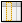
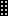

Graphic user interface
ProjeQtor graphical user interface is set into several areas.
Those areas are :
- Top bar
- Logo area
- Menu and Document windows
- Message and Link windows
- List window
- Detail window
- Info bar
{kind=link}
GUI with areas
Splitters
- Splitters allow resizing areas in graphic user interface.
- Green splitter allows resizing Menu and Documents windows & Message and Link windows areas.
- Red splitter allows resizing left and right side areas.
- Orange splitter allows resizing list and detail windows areas.
{kind=link}
Splitters
Top bar¶
{kind=link}
Top bar
Menu buttons
{kind=link}
- Menu buttons gives rapid access to main elements.
- Arrows allow to display buttons list.
Contextual menu buttons
- Allows to select a work context to limit the visibility on displayed buttons.
Project selector
{kind=link}
- Allows to restrict the visibility of all objects to the dedicated project, including sub-projects if any.
- The selection will also define de “default” project for new items.
Project selector parameters
Through the project selector parameter icon  , you can select :
, you can select :
- View closed projects.
- Change the project selector format.
- Refresh the list.
{kind=link}
Navigation buttons
{kind=link}
{kind=link}
{kind=link}
New tab button
- Allows to open a new tab with the same session.
{kind=link}
Logo area¶
{kind=link}
Logo area
Software information
- Clicking on the Logo Area will display the “About” pop-up.
{kind=link}
Online user manual
- Click on the Help icon
 will open the online user manual, to the page corresponding to the actual screen.
will open the online user manual, to the page corresponding to the actual screen.
Note
- You can change logo with your own.
- Refer to administrative guide to replace the logo.
{kind=link}
{kind=link}
{kind=link}
{kind=link}
Message and Link windows¶
{kind=link}
Message and Link windows
Note
Toggle windows
- You can toggle between External shortcuts and Console messages windows.
- Just click on window header.
External shortcuts window
- Displays hyperlinks to remote web pages.
- Theses links are defined as hyperlink attachements on projects.
- Links displayed here depend on selected project.
{kind=link}
Console messages window
- Displays information about main actions : insert, update, delete.
- Timestamp indicates when action was done.
{kind=link}
Note
- This is only a temporary logging area.
- Messages displayed here are not stored and will not live more than user connection.
Main area¶
The main area (right side of the screen) is generally divided in two parts : List window and Detail window.
List window¶
{kind=link}
List window
{kind=link}
Element identified
- Identifies the element and the number of listed items is displayed.
- Each element are associated to a distinctive icon.
Rapid filter
- Rapid filtering fields are proposed : “id”, “name” and “type”.
- Any change on “id” and “name” will instantly filter data.
- Search is considered as “contains”, so typing “1” in “id” will select “1”, “10”, “11”, “21”, “31” and so on.
- Selecting a “type” in the combo box will restrict the list to the corresponding type.
Buttons
- Click on the “search button”
 to display the textual search area.
to display the textual search area. - Click on the “advanced filter” to set advanced filter (see : Advanced filter).
- Click on the “select columns to display”  to set columns order (see : Displayed columns).
- Click on the “print the list” to get a printable version of the list.
- Click on the “export to PDF format” to export it to PDF format.
- Click on the “export to CSV format” to export all the data of the selected items into CSV format file (see : Export to CSV format).
- Click on the “create a new item” to create a new item of element.
{kind=link}
{kind=link}
{kind=link}
{kind=link}
{kind=link}
{kind=link}
Show closed items flag
- Check the “show closed items” to list also closed items.
Columns header
- Click on the header of a column will sort the list on that column (first ascending, then descending).
Note
- The sorting is not always on the displayed name.
- if the sorted column is linked to a reference list with sort order value, the sorting is executed on this sort value
- for instance, here the sorting on the status is executed corresponding to Status sort order value, defined as a logic workflow for status change.
- if the sorted column is linked to a reference list with sort order value, the sorting is executed on this sort value
Items list
- Click on a line (any column) will display the corresponding item in the detail window.
Advanced filter¶
{kind=link}
The filter pop-up presents two areas : “Active filter” and “Saved filter”.
Active filter
- Enter new clause in Active filter : in “Add a filter or sort clause”, select the name of the field, the operator and the value for the clause.
- Click on
 on a clause line to remove it.
on a clause line to remove it. - Click on on the header of Filter criteria to remove all clauses.
- This can also be done by clicking the “Clear” button.
- When Filter criteria is correct, click on “OK” button to apply the filter to the list.
- You can also click “Cancel” button to revert to previous filter.
- At any step you can enter a filter name and click on to save the filter definition.
{kind=link}
{kind=link}
Operators detail
- Sort operator define a sort criteria, then possible values are “ascending” or “descending”.
- Amongst operator allows multi-value selection is possible using
Controlkey.
Note
- Filters are defined and stored for a user and a type of item (a screen).
- When a filter is applied to a type of item, coming back after moving to another type (another selection in the menu) will apply the previously defined filter.
- After disconnection, currently applied filter is lost, but stored filters are saved.
- Default filter (if selected) is also stored and will be automatically applied on next connection.
Saved filter
- Click on a Saved filter to retrieve its definition (filter criteria).
- Click on on a saved filter to delete it.
- Click on “Default” button to set actual stored filter as default, kept even after disconnection.
{kind=link}
Displayed columns¶
- This button opens the list of all available fields.
- Just check the fields you want to display in the list.
- You can reorder fields with drag & drop feature, using the selector area .
- When a field is selected, you can change its width with the spinner button.
{kind=link}
Width
- Width is in % of total list width.
- Minimum width is 1%. Maximum width is 50%.
- So, if you select to many columns or set columns width too large, you may have total width over 100%.
- This will be highlighted beside buttons.
- This may lead to strange display, over page width, on List, reports or pdf export, depending on browser.
- It is possible to reset the list display to its default format using the “reset” button.
Note
id and name
- “id” and “name” are mandatory fileds : they cannot be removed from display.
- The “name” width is automatically adjusted so that total list width is 100%.
- Take care that “name” width cannot be less than 10%.
{kind=link}
Export to CSV format¶
The Export pop-up allows to choose fields to export.
The fields are presented in the order as they appear in the item description.
Selecting fields
- You can easily check or uncheck all fields to export.
- You can also easily restrict selected fields to the ones that are actually displayed in the list.
id or name for references
- For fields that reference another item (displayed as lists in the item description), you can select to export either the id or the clear name of the referenced item.
{kind=link}
Note
- CSV exported files can directly be imported through the Import functionality.
Detail window¶
{kind=link}
Detail window
{kind=link}
Element identified
- Identifies the element and the item id number.
- Each element are associated to a distinctive icon.
Creation information
- Information about item creation : issuer and date.
Note
- Administrator can change information.
Buttons
- Click on to create new item.
- Click on to save the changes.
- You can rapidly save with
Control-s.
- You can rapidly save with
- Click on to get a printable version of the detail.
- Click on to get a printable version of the detail in PDF format.
- Click on to copy the current item (see : Copy item).
- Click on to cancel ongoing changes.
- Click on
 to delete the item.
to delete the item. - Click on to refresh the display.
- Click on to send detail of item by email (see : Email detail).
- Click on to update several items in one operation (see : Multiple update).
- Click on to show checklist.
- Available only when user set user parameter “display checklists” to “On request”.
- For detail of checklist information, see Section: Checklist.
- Click on to show history of changes.
- Available only when user set user parameter “display history” to “On request”.
- For detail of history of changes information, see Section: Change history.
{kind=link}
{kind=link}
{kind=link}
{kind=link}
{kind=link}
{kind=link}
{kind=link}
{kind=link}
Note
Warning
- When changes are ongoing, you can not select another item or another menu item.
- Save or cancel ongoing changes first.
Drop file area
- This area allows to add a attachement file in item.
- You can drag and drop file.
- Or click on area to select file.
Sections
- The fields are regrouped under section.
- All sections can be folded or unfolded, clicking on the section title.
- The sections are organized in columns.
- Maximum three columns can be displayed.
- Some sections are displayed on almost all screens, see : Common sections
Copy item¶
- Allows copied item of element.
- Options displayed in pop-up depends on whether an item is simple or complex.
{kind=link}
Simple items
- Simple items (environment parameters, lists, …) can only be copied “as is”.
Complex items
Complex items (Tickets, Activities, …) it is possible to copy them into new kind of elements.
For instance, it is possible to copy a Ticket (the request) into an Activity (the task to manage the request).
It is possible to select :
- New kind of element.
- Select new type (corresponding to the kind of element).
- Change the name.
- Select whether the initial element will be indicated as origin of the copied one.
- For main items, it is also possible to choose to copy links, attachments and notes.
Note
- For Projects and Activities, it is also possible to copy the hierarchic structure of activities (sub-projects, sub-activities).
- The new item are the status “copied”.
Email detail¶
It is possible to send an informative email to defined recipients list.
message
- The message that will be included in the body of the email, in addition to complete description of item.
Multiple update¶
To update several items in one operation.
This will switch to new detail view :
{kind=link}
At this step, although the list does not seem to have changed, but it is now multi-selectable :
{kind=link}
Select lines of items you want to update, specify update and save : the update will be applied to all the items (if possible) and a report will be displayed on the right of the Multiple mode detail screen.
{kind=link}
Combo list fields¶
Combo list field allows to search, view or create item associate with the field.
{kind=link}
Example
- Click on to get the list of value.
- Click on to access item details.
- The action depends on whether the element is selected or not.
- Click on will directly go to the selected item.
{kind=link}
{kind=link}
Note
- Access to view or create item depends on your access rights.
- Some buttons become not available.
Element is selected
If element is selected in the combo, detail of element is displayed.
{kind=link}
No element is selected
If no element is selected, list of elements is displayed, allowing to select an item.
{kind=link}
{kind=link}
Note
Header window
- You have access to rapid filter, search button and advanced filter.
- For detail, see : List window.
Note
Select several items
- Some elements is possible to select several items, use
ControlorShift.
Go to selected item
Note
Return to last screen
- Click on to return on last screen.
- For detail, see Navigation buttons in Top bar section.
Long text fields¶
{kind=link}
Example
- Long text fields allow to write description, results, notes, ...
- A mini editor is provided.
- Text zone is expendable.
Note
Editor mode always on
- This parameter defines editor is always on in long text fields.
- See this parameter under “Graphic interface behavior” section in User parameters.
Info bar¶
{kind=link}
Info bar
{kind=link}
Log out button
- Allow to disconnect user.
Note
confirm quit application
- This parameter defines whether a confirm disconnection will be displayed before.
- See this parameter under “Graphic interface behavior” section in User parameters.
User parameters button
- Allow to access user parameters.
Hide and show menu button
- Allow to hide or show menu button
Note
hide menu
- This parameter defines whether the menu is hidden by default.
- See this parameter under “Graphic interface behavior” section in User parameters.
Switched mode button
- Allow to enable or disable switched mode between list and detail windows.
- Window selected is displayed in “full screen” mode.
- Hidden window are replaced by a gray bar.
- Click on he gray bar to switch between windows.
Note
switched mode
- This parameter defines wheater switched mode is enable or not.
- See this parameter under “Graphic interface behavior” section in User parameters.
Database name
- Display database name.
Version button
- Display application version.
- Click on button access to ProjeQtOr site.
Common sections¶
Some sections are displayed on almost all screens.
Those sections allows to set information or link information to item of the element.
Section: Description¶
This section allows to put information about item of the element.
Section: Treatment¶
This section allows to put information treatment done on the item of the element.
Mostly information under this section are :
- Status and Dates
- Responsible
- Result, Comment
- And so on
Section: Checklist¶
If a checklist is defined for the current element a checklist section will appear.
The user just has to check information corresponding to the situation.
When done, the user name and checked date are recorded and displayed.
Each line can get an extra comment, as well a globally on the checklist.
Note
- How to define a checklist, see: Checklist definition.
Note
display checklists
- This parameter defines whether the checklist section is hidden or not.
- If the value “On request” is set button appear on detail header window.
- See this parameter under “Graphic interface behavior” section in User parameters.
Section: Linked element¶
Most items can be linked to most of all other items (Actions, Activities, Tickets, Documents, …).
Note
Linked elements must belong to the same project.
Click on the corresponding section to add a link to an element. A “add link” pop up will be displayed.
Select the linked element in the list and validate (OK).
Click on to delete the corresponding link.
{kind=link}
Add link Popup
Linked element
- Click on to show element detail.
- Depends on whether the element is selected or not a pop up is displayed.
- Detail about pop up, see Combo list fields
Linked elements information
| Field | Description |
|---|---|
| Element | Type and id of the linked element. |
| Name | Name of the linked element. |
| Date | Date of creation of the link. |
| User | User who created the link. |
| Status | Actual status of the linked element. |
Reciprocally interrelated
- If Item A is linked to Item B, Item B is automatically linked to Item A.
Go to
- Click on the name of a item in the link list will directly move to it.
Link with Document
- If you select a Document to link, you’ll have the possibility to select a version of the document, so that it is the version that will be linked.
- For Documents and Document Versions, a direct link to the corresponding file is proposed.
- For document, the last version of document will be proposed, the proposed download will change with document lifecycle.
Section: Attachments¶
Users can attach files or hyperlinks on most of items.
Click on to add a attachment to an element. A “Attachment file” pop up will be displayed.
Click on to add hyperlink to an element. A “Attachment hyperlink” pop up will be displayed.
{kind=link}
Select the attachment depends on either is a file or a hyperlink and validate (OK).
Click on  to download attachment file.
to download attachment file.
Click on to access to hyperlink.
Click on to delete the attachment.
Attachment file
- To upload file :
- Select file with “Browse” button.
- Drop the file in “drop files here” area.
{kind=link}
Attachment file Pop up
Hyperlink
- Set hyperlink in hyperlink field.
{kind=link}
Attachment hyperlink Pop up
Attachment visibilty
- public : Visible to anyone.
- team : Visible to every member of the creator’s team.
- private : Visible only to creator.
Attachment information
| Field | Description |
|---|---|
| Id | Unique Id for the attachment. |
| File | File name or hyperlink. |
| Date | Date of creation of the attachment. |
| User | User who created the attchment. |
Section: Notes¶
Users can add notes on most items.
Notes are comments, that can be shared to track some information or progress.
Click on to add a note to an element. A “note” pop up will be displayed.
Click on  to edit the note.
to edit the note.
Click on to delete the note.
{kind=link}
Note Pop up
Predefined note
- Predefined note list of value appear whetear a prefedefined note is created.
- Selecting an item in the list will automatically fill in the note text field.
- How to define predefined note, see: Predefined notes.
Attachment visibilty
- public : Visible to anyone.
- team : Visible to every member of the creator’s team.
- private : Visible only to creator.
Note information
| Field | Description |
|---|---|
| Id | Unique Id for the note. |
| Note | Text of the note. |
| Date | Date of creation or modification of the note. |
| User | Name of the user who created the note. |
Section: Change history¶
All the changes items are tracked.
They are stored and displayed on each item.
On creation, just an insert operation is stored, not all the initial values on creation.
Change history information
| Field | Description |
|---|---|
| Operation | The operation on the item (insert or update). |
| Data | The field modified. |
| Value before | The value of the field before the update. |
| Value after | The value of the field after the update. |
| Date | Date of change operation. |
| User | Name of the user who operated the change. |
Note
display history
- This parameter defines whether the display history section is hidden or not.
- If the value “On request” is set button appear on the detail header window.
- See this parameter under “Graphic interface behavior” section in User parameters.
Alerts¶
You may receive some information displayed as pop-up on the bottom right corner of the screen.
Three kinds of information may be displayed :
- Information
- Warning
- Alert
Two possible actions :
- You can select to remind you in a given number of minutes (message will close and appear again in the given number of minutes).
- You can mark it as read to definitively hide it.
An alert can be sent by the administrator or indicator calculation.
Note
Administrator
- Administrator can send alert by administration console.
Note
Indicator calculation
- Indicator calculation send only warning and alert message.
- Alert coming from indicator calculation message contains more information :
- Item id and type.
- Indicator description.
- Target value.
- Alert or warning value.
Themes¶
Users can select colors Theme to display the interface.
New theme is automatically applied when selected.
Note
theme
- This parameter defines the theme to display.
- Save parameters to retrieve this theme on each new connection.
- See this parameter under “Display parameters” section in User parameters.
Multilingual¶
ProjeQtOr is multilingual.
Each user can choose the language to display all the captions.
Note
Of course, data is displayed as input, no translation is operated.
Note
language
- This parameter defines language is used to display captions.
- Save parameters to retrieve this theme on each new connection.
- See this parameter under “Display parameters” section in User parameters.